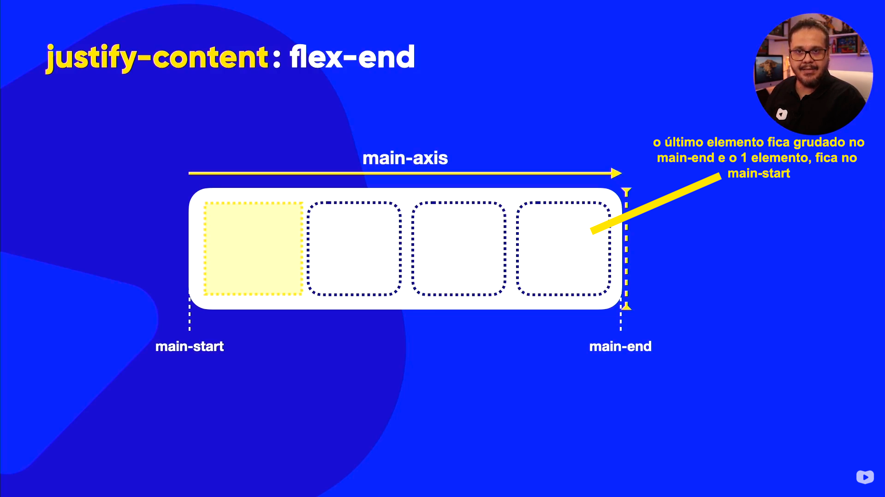
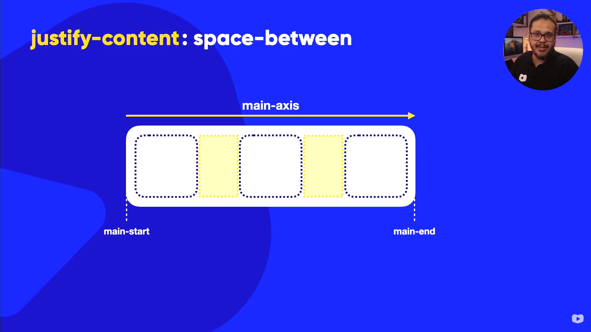
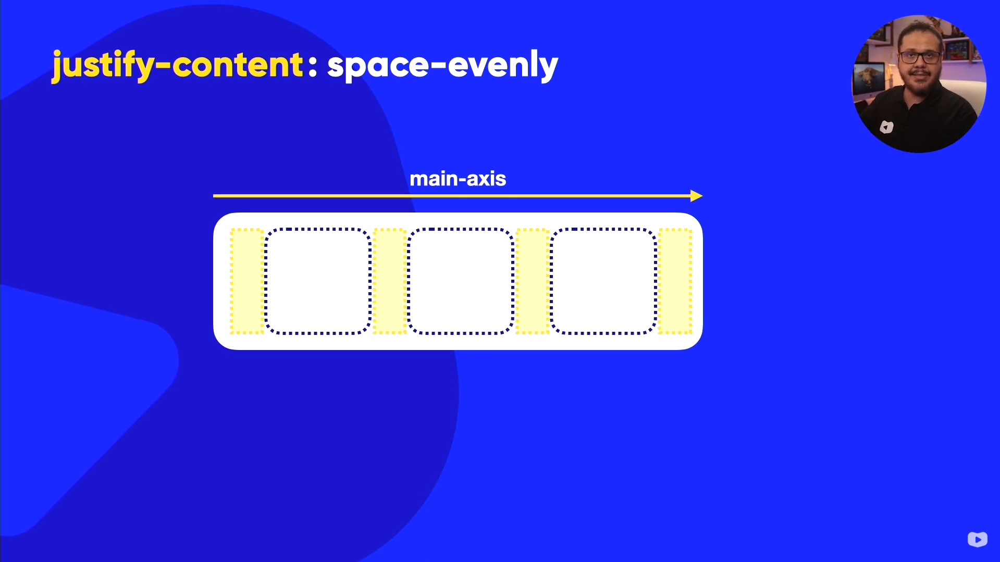

O justify-content é no sentido do main-axis
justify-content: flex-start (Padrão) | flex-direction: row
o 1 elemento vai ficar grudado no (main-start) e o branco no final (main-end)

justify-content: flex-end | flex-direction: row
o ultimo elemento vai ficar grudado no (main-end) e o branco no inicio (main-start)
justify-content: center | flex-direction: row
o center alinha todos os elementos no centro do container no caso do main-axis e os espaços em branco ficam divididos igualmente nas extremidades.

justify-content: space-between | flex-direction: row
o space-between gruda o 1 elemento no (main-start) e o ultimo no (main-end).

justify-content: space-evenly | flex-direction: row
o space-evenly ele não vai grudar nenhum elemento nas extremidades, ele vai colocar o elementos desposto dentro d o elemento de forma que os espaços entre os elementos e as extremidades sejam iguais.

justify-content: space-around | flex-direction: row
o space-around ele vai pegar o container, vai dividir o espaço em pedaços iguais e vai colocar os elementos no meio desses espaços, ou seja, o espaço entre os elementos será o dobro do espaço entre os elementos e as extremidades do container.
Resumo Visual